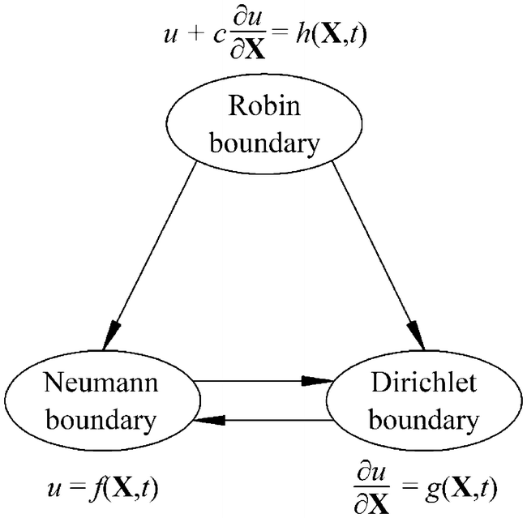

Relations among Dirichlet, Neumann and Robin boundaries.
1 Multiphysics Learning & Networking. Dr. Leo Liu. University of Virginia.
2 Chen, Zheng & Ni, Pengpeng & Chen, Yifeng & Mei, Guoxiong. (2020). Plane-strain consolidation theory with distributed drainage boundary. Acta Geotechnica.